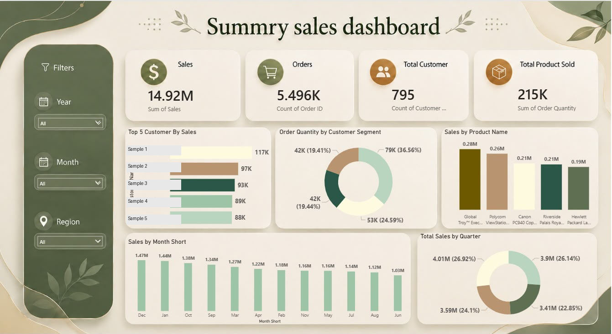

What the dashboard shows
- Monthly and quarterly trends
- Product comparisons
- Customer-segment breakdowns
SALES ANALYTICS / TRAINING STUDY
A sales training dashboard combining headline measures with product, customer-segment and time-based comparisons.
Static dashboard screenshot. Interactive filters are not available on this website.

Select the image to inspect it at its original size.
THE BUSINESS QUESTION
A sales team could use the views to review seasonality, compare product demand and identify segments for further analysis.
The screenshot contains sales, orders, customers, products and time-based comparisons. This portfolio presents a dashboard preview rather than a downloadable dataset.
PROJECT SCOPE
This training study documents the visible dashboard and its possible decision uses. It does not include the source workbook, dataset, data-preparation process or calculation definitions. The comparisons describe what the dashboard presents, not independently validated business findings.